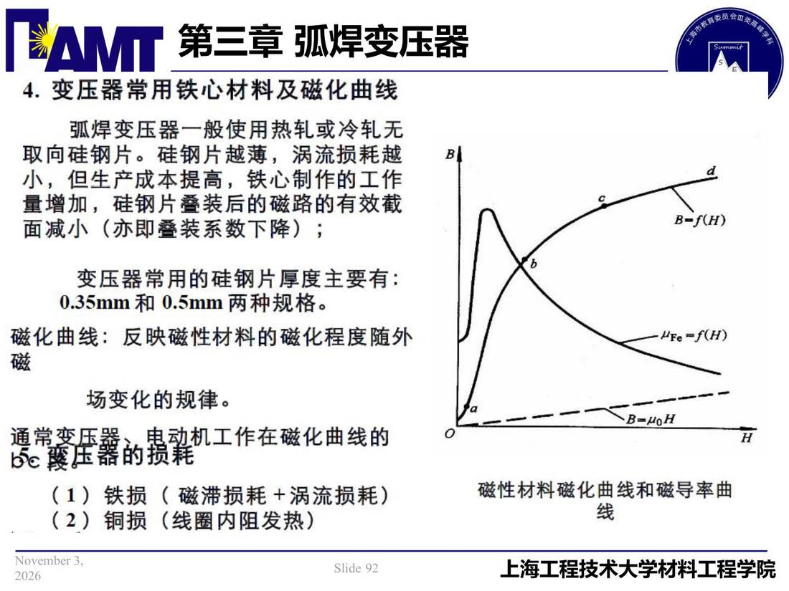

03 第3章 弧焊变压器/p092 4. 变压常用铁心材料及磁化曲线
p092 4. 变压常用铁心材料及磁化曲线
📄 原文：📄 弧焊电源 课件（PDF 第 92 页）（幻灯片 92/273；PDF 第 92 页）
4. 变压常用铁心材料及磁化曲线

讲义原文
本页在课件中是纯图文版式（无文字层），内容以页图与下面的 OCR 文本为准。
页面文字（OCR 机读，可能有错字，以页图为准）
- 变压常用铁心材料及磁化曲线 弧焊变压器一般使用热轧或冷轧无 取向硅钢片。硅钢片越薄，涡流损耗越 小，但生产成本提高，铁心制作工作 量增加，硅钢片叠装后的磁路的有效截 面减小（亦即叠装系数下降）； 变压器常用的硅钢片厚度主要有： 0.35mm和 0.5mm两种规格。 磁化曲线：反映磁性材料的磁化程度随外 场变化的规律。 隱營簽蛋羅寢加工作在酸化曲线 （1）铁损（磁滯损耗+涡流损耗） （2）铜损（线圈内阻发热） HFe =f（H）